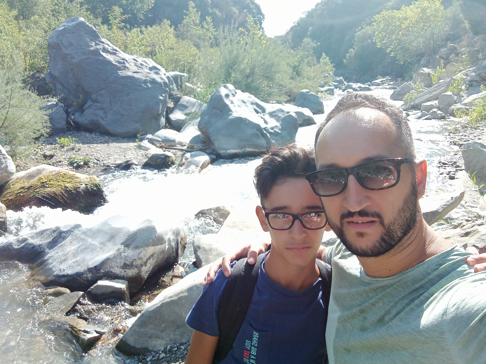
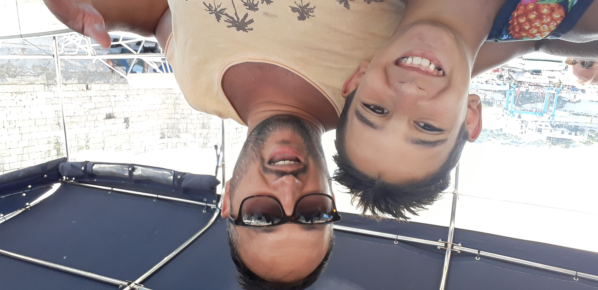
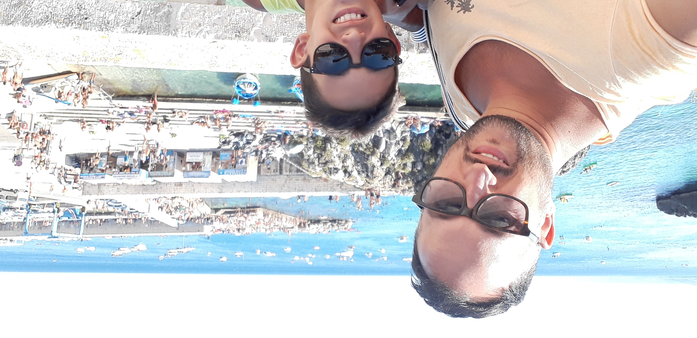
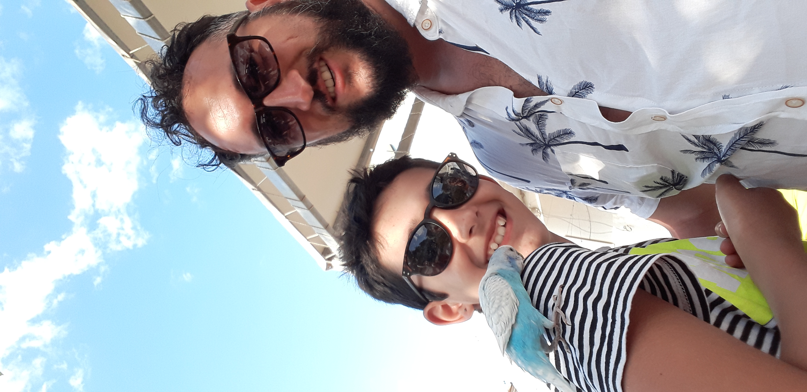
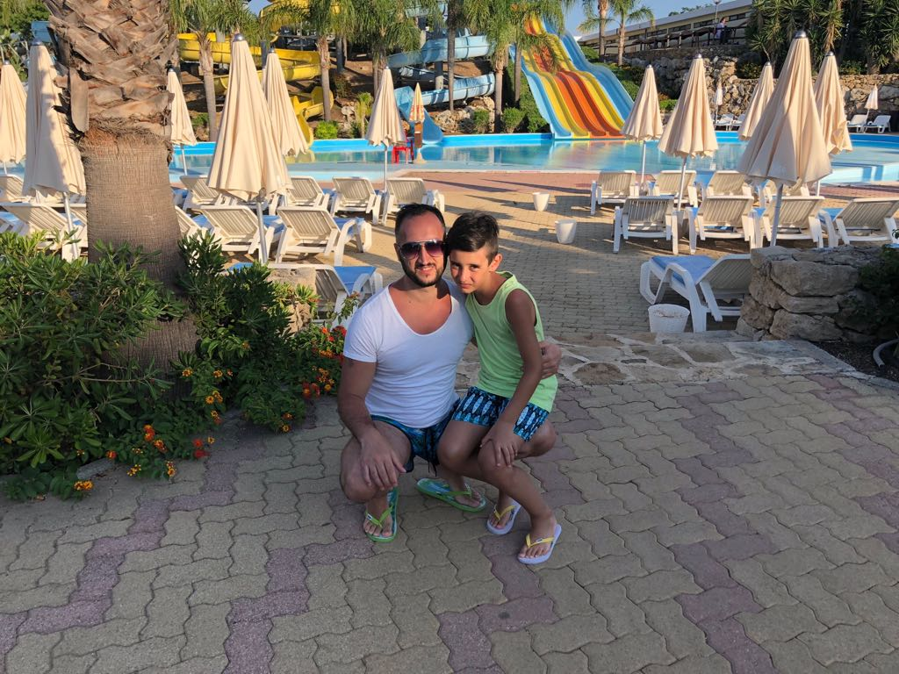

Lettera alla mia papearedda
Paparedda, ho scritto una lettera così a ognuno di voi. Onestamente non ho qualcosa di preciso da dirti, solo che in quest'anno mi sei mancata tantissimo, sia i nostri giochetti che i nostri litigi. So di non essere il fratello migliore del mondo e di non dirtelo spesso, ma ti voglio bene amore, tantissimo, sei la mia prima sorellina, quella che ho desiderato e aspettato con ansia da piccolo, la prima che ho tenuto in braccio, a cui ho cambiato il pannolino, e con cui ho fatto altre mille cose che non condividerò mai con nessuno se non con te. ti chiedo scusa per tutte le volte che magari ti ho fatto pensare, con ciò che ho fatto o detto, che non ti volessi bene, volessi più bene ad Azzurra o altro, ma sappi che non è così e anzi cercherò di dimostrartelo meglio quando tornerò, che anche se vi tratto in modo diverso, vi voglio bene entrambe allo stesso modo. non vedo l'ora tu cresca e avremo un rapporto più da amici della stessa età che come ora bambina e ragazzo (anche se ovviamente anche il rapporto di ora mi piace tantissimo). comunque ovviamente non sono perfetto, mi piacerebbe tu mi dica quando faccio qualcosa che ti ha infastidita, fatta arrabbiare che sia perché ho sbagliato io o perché tu non capisci il motivo per cui l'ho fatto. anche se mi arrabbio spesso con te non cambierei nulla di te, l'unica cosa mi piacerebbe che imparassi a parlare con me e con mamma e papà quando c'è qualcosa che non va (a meno che non lo fai già e solo io non lo so essendo fuori da un anno), mi piacerebbe che riconoscesti di più quello che mamma e papà fanno per te e per noi, e non farlo per scontato ma anzi ringraziare, comunque sei ancora piccola quindi non pretendo tu ci riesca già ora, spero solo un giorno accada. sai in quest'anno ho pensato a tante cose del passato: tutte le nostre giornate passate a vedere i sette peccati capitali, quando siamo andati insieme al Grest sotto casa, quando scendevamo insieme sotto a giocare con gli altri bambini della via, tutti i nostri pomeriggi a giocare da piccoli a casa, i viaggi in famiglia, in Puglia, a capo d'Orlando, e penso potrei andare avanti per tantissimo. detto questo ti ripeto che io ti amo tantissimo e non vedo l'ora di tornare, quindi, a tra poco paparedda
(La canzone non c'entra nulla ma ne ho messa una mi ricordasse di noi due)




